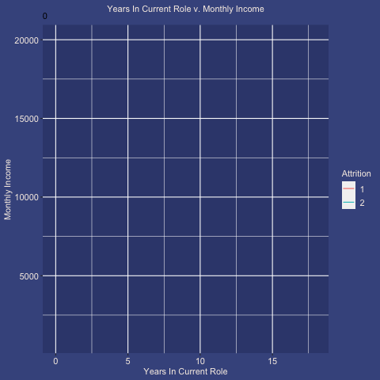

firstly! what is employee attrition?
employees leaving their organizations for unpredictable or uncontrollable reasons (from the perspective of HR)
The dataset I used for this project is called “Employee Attrition and Factors,” which I found on Kaggle. Thinking about how I will be entering the industry workforce when I graduate (in almost exactly one year now!), this dataset is relevant to my future as well as anyone else who has the same goal, and my hope is that analyzing this data will reveal patterns to reasons why people unexpectedly leave their jobs.
Out of the variables offered in the dataset, some I find notable are distance from home, number of years in this role, and salary.
These results can help me decide what some significant variables are when considering if a company retains a lot of employees...
Firstly, I wanted to see what kind of dataset I would be working with. Below are some graphs (pie chart and histograms) to visualize the distribution of data points in our dataset. I separated people by 1. whether they left the company or not (attrition/left = yes, no attrition/stayed = no), age, education level, job department, job level, and years at their company.
Some of the variables that have a correlation to each other are
age, department, job level, job role, marital status, numcompaniesworked, performance
rating, total working years, years at company, years in current role, years since last
promotion, years with current manager.
The variables that involve years having correlation makes sense bc years naturally increase, so all the years would be correlated to each other.
Another point that I noticed was that it looks like gender doesn't matter too much, which is contrary to what I thought... I wanted to see if gender
had any part in the reason why employees left. Maybe there just weren't enough data points?
I separated female and male and analyzed the effect of the number of years one was in their current role, seeing if gender had any effect on income. I also separated this by whether or not the employee eventually left the company. The results were actually contrary to what I thought, that employees who left would have a lower income. Rather, Attrition=1 (employees stayed), had a lower monthly income. However, this might also be attributed to the fact that the x axis is the number of years that an employee spent in a specific role. This doesn't include job promotions, or any role shifts.
Next, let's look at some substantive effects plots to closer analyze which variables have an effect on whether or not employees left the company or not. Most of these results make sense. For example, those in a higher job level tended to leave the company less. Employees who were farther away from the office tended to leave the company more than those who had a closer job. etc, etc.
Finally, interact with this graph! It's been split up into job level so you can clearly see employees' job satisfaction. Light blue dots represent employees who left, and dark blue dots represent employees who stayed. This line graph/scatterplot compares an employee's years spent total at a company with their overall job satisfaction. From the results, it looks like there wasn't really a linear trend, and all job levels had around the same job satisfaction. The only difference was that there were less data points in the lower job levels.